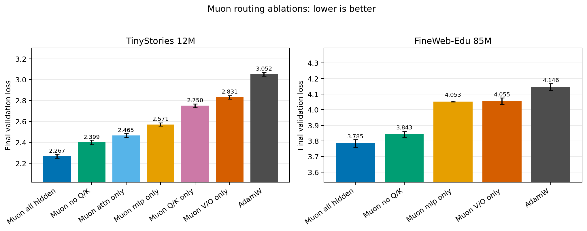
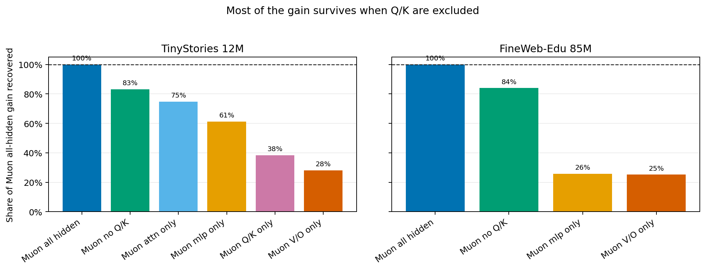
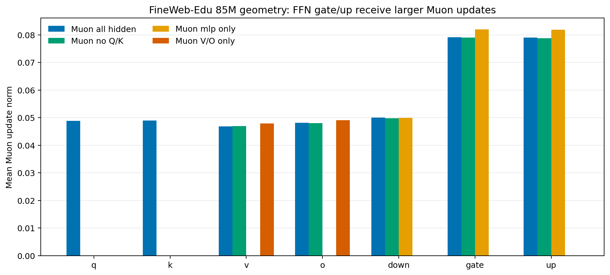
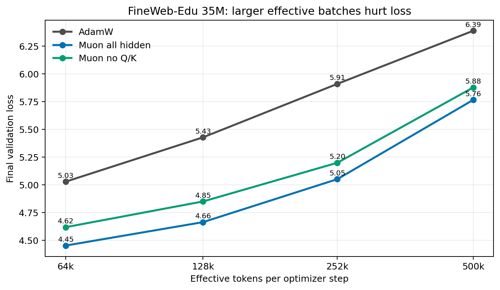

May 2026
Muon is an orthogonalized optimizer that often improves transformer pretraining, but the practical question is more specific: does Muon need to be applied to every hidden matrix, or can it be routed selectively to the parts of the transformer where it matters most?
This project treats optimizer assignment as the experimental variable. The harness trains compact decoder-only language models and compares AdamW against Muon routed to all hidden matrices, MLP matrices, attention matrices, V/O projections, Q/K projections, no-Q/K, and layerwise regions.
All-hidden Muon is consistently the best routing in the completed runs. The surprise is that Muon without Q/K is consistently second-best and recovers most of the all-hidden Muon gain: about 83.2% on TinyStories 12M and 84.0% on FineWeb-Edu 85M.


| Claim | Result |
|---|---|
| Muon beats AdamW | Supported strongly across the main comparisons. |
| All-hidden Muon is best | Supported in every seed-replicated main comparison. |
| No-Q/K matches all-hidden | Not supported. It is second-best, but still worse than all-hidden. |
| MLP-only or V/O-only explains the full gain | Not supported on FineWeb-Edu 85M. Each recovers only about 25-26% individually. |
| FFN + V/O together matter | Supported. No-Q/K recovers about 84% of the all-hidden gain on FineWeb-Edu. |
The update geometry is not uniform across modules. On FineWeb-Edu 85M, Muon update norms are larger for FFN gate and up matrices than for attention V/O or Q/K matrices, which suggests that the FFN pathway receives stronger update pressure under Muon.

A FineWeb-Edu 35M batch-size sweep showed that absolute validation loss worsened as effective tokens per optimizer step increased, while the optimizer ranking stayed stable: all-hidden Muon best, no-Q/K second, AdamW worst.

Selective Muon routing works surprisingly well, but it does not fully replace all-hidden Muon. The strongest interpretation from these runs is that most of Muon's benefit comes from non-Q/K hidden matrices, especially the combined FFN + V/O pathway. Q/K appears supplementary rather than central.